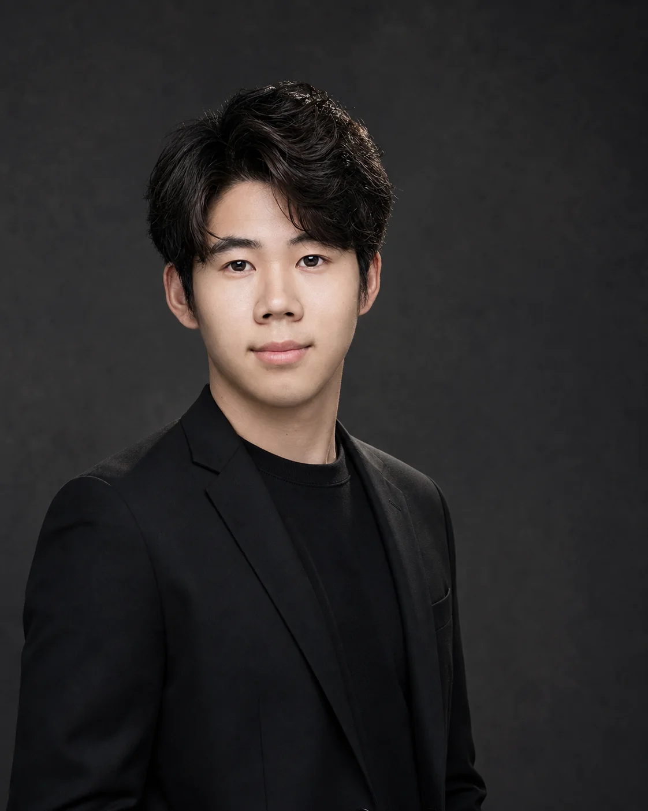

FIELD 01
关键帧生成
Visual Frame Generation
围绕同一视觉命题，生成可进入剪辑的高完成度画面，并从构图、光影、主体关系与连续性中筛选有效镜头。
进入视觉案例 View full caseMAO YUEYUAN · GENERATIVE FILMMAKER
From concept to final cut — an independent generative film workflow.
将公司项目与国内漫剧成片前置展示，让项目经验在进入首页后的第一次滚动中清晰可见。
进入完整作品集 View full portfolioSELECTED FILMS
A ONE-PERSON STUDIO
我是毛月园，生成式影像创作者。将创意判断、视觉开发、镜头叙事与后期剪辑连接成稳定的个人生产体系，让想法不止停留在概念阶段。
SELECTED CAPABILITIES
FIELD 01
Visual Frame Generation
围绕同一视觉命题，生成可进入剪辑的高完成度画面，并从构图、光影、主体关系与连续性中筛选有效镜头。
进入视觉案例 View full caseFIELD 02
Cinematic Storytelling
从原创剧本、分镜与光影，到对白、声音和剪辑节奏，把一个概念组织成可被观看的故事。
播放完整成片 Watch full filmFIELD 03
Independent Production
自建 AI 工作流与专业 Skill 库，以 Codex、GPT、小云雀等工具完成从理解故事到交付成片的完整闭环。
PRODUCTION CREDITS
以准确的职责描述团队项目，不与个人原创作品混淆。
第 1—10 集 · 素材筛选、镜头节奏、对白与字幕
第 39—49 集 · 素材筛选、镜头节奏、对白与字幕
第 13—25 集 · 素材筛选、镜头节奏、对白与字幕
《将军的掌中娇》《灾厄》《斩仙台》《丹道第一圣》《被魔尊附体后我成反派了》《穿越大乾皇朝签到陆地神仙》等。

MAO YUEYUANGENERATIVE FILMMAKER
ABOUT THE CREATOR
我关注的不只是“生成一张好看的画面”，而是如何让一套视觉资产真正进入叙事、形成节奏，并最终成为可以交付的作品。
经过两年的影像制作实践，我建立了自己的 AI 工作流与 Skill 库，能够独立完成不同题材、不同画幅的生成式影像生产。
AVAILABLE FOR OPPORTUNITIES & PROJECTS
SELECTED WORKS / PORTFOLIO
海外漫剧公司项目、国内漫剧项目与个人原创视觉作品被清晰区分。
参与制作的公司项目。以完整竖屏剧情成片，呈现海外漫剧内容经验。
独立呈现国内漫剧项目，以完整竖屏成片展示玄幻题材的角色、世界观与剧情表达。
AI VISUAL FILM · FRAME GENERATION
THE VISUAL SYSTEM
围绕鱼、龙门与云海三个核心意象，在统一的蓝金色视觉体系中完成关键帧生成与画面筛选，并将静态奇观组织成具有方向感和递进关系的连续影像。
SELECTED FRAMES
SELECTION LOGIC
第一眼能够识别鱼、龙门与龙的视觉关系。
控制蓝金色调、云海质感与东方建筑语言的一致性。
筛选具备方向、尺度和动作递进关系的画面进入剪辑。